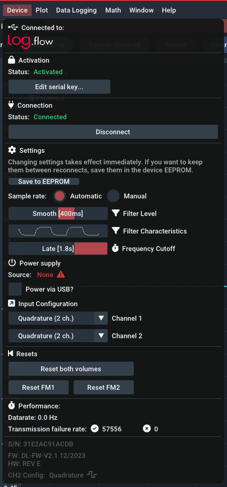
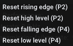
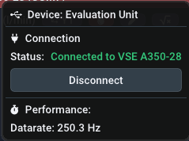
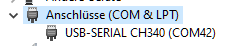

Geräte
Springen Sie schnell zu dem entsprechenden Abschnitt:
Log.flow Datenerfassungssystem#
Anschluss#
Bevor Sie ein Kabel oder eine Spannung an das log.flow-Gerät anschließen, beachten Sie bitte die folgenden Anschlussdiagramme, um Schäden zu vermeiden.
Es gibt drei verschiedene Hardware-Versionen von log.flow. Wählen Sie die Registerkarte aus, die dem Typ des log.flow entspricht, über den Sie verfügen:
Verfügbare Kanäle:
- Eingang 1: Ein/Zweikanal Quadratur (HTL-Pegel 0..24 V)
- Frequenz ( Durchflussrate)
- Impulszahl ( Volumen)
- Eingang 2: Ein/Zweikanal-Quadratur (HTL-Pegel 0..24 V) + Zusatzfunktionen
- Frequenz ( Durchflussrate)
- Impulszahl ( Volumen)
Info: TTL inkompatibel
Leider können TTL-Eingangssignale (0..5 V) nicht mit der Standardversion von log.flow gemessen werden. Sie können den Vertrieb um eine angepasste Version mit TTL-Pegel-Unterstützung bitten.
Diagramm:

Verfügbare Kanäle:
- Eingang 1: Ein/Zweikanal Quadratur (HTL-Pegel 0..24 V)
- Frequenz ( Durchflussrate)
- Impulszahl ( Volumen)
- Eingang 2: Analoger Spannungseingang an Pin 4 (Max. Spannung 0..10 V)
- Analoger Wert ( Druck, Temperatur,..)
Wenn Sie einen Sensor an den Analogeingang anschließen, stellen Sie sicher, dass Sie die Pinbelegung stimmt. Wahrscheinlich müssen Sie ein Adapterkabel für Ihren spezifischen Sensor bauen, um die Pinbelegung des Sensordatenblatts an die von log.flow U anzupassen.
Vorsicht: 10 V Spannungsgrenze
Der Anschluss eines HTL-Durchflussmessers oder einer höheren Spannung als 10 V an den Eingangspin von Eingang 2 kann das Gerät beschädigen!
Diagramm:

Verfügbare Kanäle:
- Eingang 1: Ein/Zweikanal Quadratur (HTL-Pegel 0..24 V)
- Frequenz ( Durchflussrate)
- Impulszahl ( Volumen)
- Eingang 2: Analoger Stromeingang an Pin 4 (Max. Strom 20 mA)
- Analogwert ( Druck, Temperatur,..)
Wenn Sie einen Sensor an den Analogeingang anschließen, stellen Sie sicher, dass Sie die Pinbelegung stimmt. Wahrscheinlich müssen Sie ein Adapterkabel für Ihren spezifischen Sensor bauen, um die Pinbelegung des Sensordatenblatts an die von log.flow I anzupassen.
Achtung: Keine T-Stücke mit Stromeingang verwenden
Versuchen Sie nicht, den analogen Sensor einer bestehenden Anlage mit einem T-Stück parallel zum log.flow I anzuschließen, da dies zu einem Kurzschluss führt. Stromsensoren müssen in Reihe geschaltet werden. Intern funktioniert die Strommessung über einen Shunt, der Pin 4 mit GND verbindet.
Info: 20 mA Stromgrenze
Der Anschluss eines HTL-Durchflussmessers oder einer niederohmigen Quelle an Eingang 2 sollte vermieden werden. Log.flow I wird den Kurzschluss erkennen und den Eingang deaktivieren. Sie können den ausgelösten Kurzschlussschutz im Gerätemenü von EasyGraph wieder aktivieren.
Diagramm:

Gerätemenü#

Freischaltung#
Wenn Sie sich zum ersten Mal mit Ihrem log.flow-Gerät verbinden, lesen Sie im Kapitel Aktivierung nach, wie Sie den Serienschlüssel einstellen. Die log.flow-Lizenz ist hardwaregebunden an das jeweilige log.flow-Gerät und die zu diesem Gerät passende Seriennummer muss in der EasyGraph-Software eingegeben werden. Der gesamte Vorgang funktioniert auch ohne Internetverbindung.
Einstellungen#
Konfiguration der Messung#
Öffnen Sie die Geräteeinstellungen, indem Sie mit der rechten Maustaste auf das angeschlossene log.flow-Gerät im Geräteverwaltungspanel klicken. Mit den folgenden Einstellungen können die Messeigenschaften von log.flow angepasst werden. Alle Änderungen der Einstellungen werden sofort wirksam. Um die Einstellungen zwischen mehreren Sitzungen/Verbindungen beizubehalten, verwenden Sie die Schaltfläche Save to EEPROM, um die aktuellen Einstellungen dauerhaft auf das log.flow-Gerät zu schreiben.
Abtastrate: Standardmäßig wird die Abtastrate dynamisch auf der Grundlage der eingestellten Verlaufszeit des Plots berechnet (Modus: Automatisch). Dies stellt sicher, dass Sie bei einer Langzeitaufzeichnung nicht mit einer unglaublich hohen Samplerate aufnehmen. Im Modus Manuell können Sie die Abtastrate unabhängig auf einen Wert zwischen 1 Hz und ~1000 Hz (max.) einstellen.
Filterpegel: Mit den Schiebereglern für den Filterpegel kann der interne Frequenzfilter des log.flow eingestellt werden. Ein niedriger Filterwert führt zu einer schnelleren und lauteren Frequenzdarstellung - ein höherer Filterwert glättet die Frequenz. Die Anstiegszeiten des Filters können Sie der folgenden Tabelle entnehmen:
| Anstiegszeit [ms] | Filtereinstellung |
|---|---|
| 0 | Aus |
| 10 | Dynamisch |
| 100 | Mittel |
| 400 | Glatt [Standard] |
| 2000 | Schwer |
| 5000 | Extrem |
Filtereigenschaften: Hier muss nichts eingestellt werden. Dieses Mini-Diagramm ist nur ein grober visueller Hinweis darauf, wie der Filter auf eine Rechteckwelle reagiert.
Frequenzabschaltung: Die Frequenz-Cutoff-Einstellung legt die Zeit fest, nach der die gemessene Frequenz auf Null gesetzt wird, wenn keine Signalflanken mehr an den Eingangspins gemessen werden. Er ist vergleichbar mit dem Parameter WAIT TIME bei unseren Auswertegeräten (A341/A350/FU210). Die Änderung dieses Parameters beeinflusst die minimale Frequenz, die mit log.flow gemessen werden kann. Für den normalen Gebrauch ist die höchste Einstellung Late (1.8s) vollkommen ausreichend und erlaubt die Messung von Frequenzen bis zu 0,56 Hz. Wenn Sie eine schnellere Reaktion auf einen Stopp benötigen, können Sie die Cutoff-Zeit herabsetzen, was jedoch zur Folge hat, dass die minimale Frequenz, die gemessen werden kann, höher ist.
| Cutoff-Zeit [ms] | Cutoff-Einstellung |
|---|---|
| 250 | Früh |
| 1000 | Normal |
| 1800 | Spät [Voreinstellung] |
Die minimale Frequenz \(f_{min}\) lässt sich aus der Abschaltzeit \(t_{wait}\) mit der folgenden Formel berechnen:
Stromversorgungskonfiguration#
Log.flow unterstützt 3 verschiedene Stromversorgungsschemata:
- Log.flow verfügt über einen internen Spannungsbooster von 5 V auf 24 V, der für die Stromversorgung der Durchflussmessgeräte verwendet werden kann. Wenn die Gesamtstromaufnahme der Durchflussmesser 50 mA überschreitet, sollte ein externes Netzteil verwendet werden, um das log.flow-Gerät nicht zu beschädigen oder zu überhitzen.
- Eine andere Möglichkeit ist die Verwendung eines T-Verteiler-M12-Steckers an einem der Anschlüsse des Durchflussmessers, um eine bestehende 24-V-Versorgungsspannung von außen (z. B. von der Testbench) einzuspeisen. Die Spannung wird dann an den anderen Durchflussmesser weitergeleitet.
- Externe Stromversorgung über die DC-Buchse und das externe 24-V-Netzteil (im Lieferumfang enthalten) für höhere Stromanforderungen. Bitte nicht zusammen mit T-Stücken verwenden!
Sie können den Spannungsbooster über das Kontrollkästchen Power via USB? im Gerätemenü aktivieren.
Tipp: Spannungsbooster schaltet sich bei Nichtgebrauch ab
Wenn Sie das externe Netzteil einstecken, kommt es zu keinem Kurzschluss, da dieser Zustand automatisch erkannt wird. Der Spannungsbooster wird dann automatisch deaktiviert.
Warnung: Ext. Netzteil nicht bei Anlagenspannung verwenden
Vor Anschluss und Verwendung des externen Netzteils sollte, insbesondere bei Verwendung von T-Stücken, sichergestellt werden, dass das Netzteil nicht Spannung in die Anlage zurückspeist bzw. mit dem 24V-Rail der Anlage verbunden wird. Andernfalls wird bei Spannungsabschaltung der Anlage diese über das Netzteil versorgt und dieses überhitzt oder kann sogar zerstört werden.
keine weiteren Optionen für diesen Gerätetyp
keine weiteren Optionen zu diesem Gerätetyp
Kurzschlusserkennung
Bei Verwendung von log.flow I überwacht das Gerät kontinuierlich den Strom am Analogeingang. Im Falle eines anhaltenden Kurzschlusses wird der Stromfluss mit Hilfe eines digitalen Schalters gestoppt, und es erscheint ein Meldungsfenster, um den Benutzer auf diesen Zustand hinzuweisen.
Im Gerätemenü wird der folgende Hinweis angezeigt:

Sie können den Stromfluss manuell wieder aktivieren, indem Sie die Schaltfläche Re-Enable... betätigen. Falls der Kurzschluss immer noch vorhanden ist, wird die Warnung erneut angezeigt.
Eingangskonfiguration#
Die verfügbaren Optionen für die Eingangskonfiguration hängen wiederum vom Gerätetyp ab. Wählen Sie die zu Ihrem Gerätetyp passende Registerkarte:
Kanal 1
Für den ersten Eingangskanal können Sie zwischen 3 Eingangsoptionen wählen:
- Quadratur (2 Kanäle auf Pin 2+4)
- Einzelner Kanal (an Pin 2)
- Einzelner Kanal (auf Pin 4)
Kanal 2
Kanal 2 der standard log.flow Version erweitert die Funktionen von Kanal 1 um eine zusätzliche externe Lautstärkerückstellfunktion. Sie können zwischen den folgenden Optionen wählen:

Um diese Funktion zu nutzen, schließen Sie ein digitales 24V-Eingangssignal, einen Schalter/Taster oder etwas Ähnliches an den zweiten Kanal an. Wenn die ausgewählte Bedingung erfüllt ist, wird die Lautstärke von Kanal 1 zurückgesetzt.
Die flankenempfindlichen Einstellungen setzen den Wert bei einem Pinwechsel zurück. Bei Verwendung dieser Option sollten mechanische Schalter mit einem Tiefpassfilter entprellt werden.
Die pegelempfindlichen Einstellungen halten den Lautstärkewert auf Null, solange die Bedingung erfüllt ist.
Tipp: PNP-Eingang
Der einfachste Weg, einen externen Schalter anzuschließen, besteht darin, ihn zwischen die 24V-Leitung und den Eingangspin (2 oder 4) zu schalten. Der log.flow-Eingang verhält sich durch den internen Pulldown-Widerstand wie ein PNP-Eingang.
Kanal 1
Für den ersten Eingangskanal können Sie zwischen 3 Eingangsoptionen wählen:
- Quadratur (2 Kanäle auf Pin 2+4)
- Einzelner Kanal (auf Pin 2)
- Einzelner Kanal (auf Pin 4)
Kanal 2
Kanal 2 von log.flow V hat nur die analoge Funktionalität [fest auf Pin 4] (devices.md#conndiagramm-logflowv "Anschlussplan"). Es gibt nichts zur Auswahl.
Kanal 1
Für den ersten Eingangskanal können Sie zwischen 3 Eingangsoptionen wählen:
- Quadratur (2 Kanäle auf Pin 2+4)
- Einkanalig (an Pin 2)
- Einzelner Kanal (auf Pin 4)
Kanal 2
Kanal 2 von log.flow I hat nur die analoge Funktionalität [fest auf Pin 4] (devices.md#conndiagramm-logflowi "Anschlussplan"). Es gibt nichts zur Auswahl.
IO.flow® mit USB-Master#
Anschluss#
Der IO-Link USB-Master ist als portables und leichtes Werkzeug zur schnellen Parametrierung und Auswertung von IO-Link im Feld oder zu Demonstrationszwecken konzipiert.
In Kombination mit dem IO.flow®-Konverter von VSE kann der Master die IO-Link-Prozessdaten an den PC streamen, um die Frequenz- und Impulszahlwerte zu analysieren und aufzuzeichnen.
Der IO.flow® Konverter unterstützt die folgende Eingangskonfiguration:
Verfügbare Kanäle:
- Ein-/Zweikanal Quadratur (HTL-Pegel 0..24 V)
- Frequenz ( Durchflussrate)
- Impulszahl ( Volumen)
Diagramm:

Verbinden Sie die M12-Buchse des IO.flow mit dem IO-Link-Master und den M12-Stecker mit dem Durchflussmesser, wie im Anschlussplan dargestellt. Verbinden Sie anschließend den Master über ein Mini-USB-Kabel mit dem PC.
Gerätemenü#

Freischaltung#
Wenn Sie sich zum ersten Mal mit Ihrem IO-Link-Master verbinden, lesen Sie im Kapitel Online-Aktivierung nach, wie Sie den Lizenzschlüssel einstellen. Die Zusatzgeräte-Lizenz wird online aktiviert und benötigt bei jedem Programmstart eine funktionierende Internetverbindung.
Einstellungen#
Abtastrate: Die Abtastrate steuert die Aktualisierungszeit des Wertes in der Plotansicht. Eine höhere Aktualisierungsfrequenz führt zu einer dynamischeren Darstellung des Flusses. Sie können sie auf einen Wert zwischen 1 Hz und ~1000 Hz einstellen (was der minimalen unterstützten IO-Link-Auffrischungszeit des Masters entspricht).
Hinweis: Samplerate \(\neq\) Filter Dynamik
Um die Filtercharakteristik des Frequenzplots anzupassen, muss die Filtereinstellung vorab mit dem IO.flow Configurator oder anderen IO-Link-Parametrisierungstechniken eingestellt werden.
Anzeige/FU-Wandler RS232#
Anschluss#
Da EasyGraph drei verschiedene Auswerteeinheiten unterstützt, wählen Sie den Reiter, der dem angeschlossenen Gerätetyp entspricht:
Verfügbare Kanäle:
- Ein-/Zweikanal Quadratur (HTL-Pegel 0..24 V)
- Frequenz ( Durchflussrate)
Diagramm:

Verfügbare Kanäle:
- Ein/Zweikanal-Quadratur (HTL-Pegel 0..24 V)
- Wählen Sie zwischen:
- Frequenz ( Durchflussrate)
- Impulszahl ( Volumen)
- Wählen Sie zwischen:
Diagramm:

Verfügbare Kanäle:
- Ein/Zweikanal-Quadratur (HTL-Pegel 0..24 V)
- Wählen Sie zwischen:
- Frequenz ( Durchflussrate)
- Impulszahl ( Volumen)
- Wählen Sie zwischen:
Diagramm:

Gerätemenü#

Freischaltung#
Wenn Sie zum ersten Mal eine Verbindung zu Ihrer Auswerteeinheit herstellen, lesen Sie bitte das Kapitel Online-Aktivierung, um zu erfahren, wie Sie den Lizenzschlüssel festlegen. Die Zusatzgeräte-Lizenz wird online aktiviert und benötigt bei jedem Programmstart eine funktionierende Internetverbindung.
Verbindungsvorgang#
Bei Verwendung eines Display/FU-Konverters ist eine automatische Verbindung nicht möglich, da sie von der verwendeten RS232-Schnittstelle abhängt. Wählen Sie den COM-Port aus, der der Schnittstelle entspricht, die für den Anschluss an die Auswerteeinheit verwendet wird.
Hilfe: Wie finde ich den richtigen COM-Port?
Um den richtigen COM-Port zu finden, an dem Ihre Auswerteeinheit angeschlossen ist, können Sie den in Windows eingebauten Gerätemanager (devmgmt.msc) verwenden. Öffnen Sie den Gerätemanager über das Startmenü, öffnen Sie die Kategorie "Ports (COM & LPT)" und achten Sie auf Änderungen, während Sie den USB-RS232-Adapter einstecken. Beim Einstecken des Adapters sollte ein neuer COM-Port erscheinen. Dies ist der Port, den Sie in EasyGraph auswählen (in diesem Fall: COM42). Wenn der PC mit einem nativen RS232-Anschluss ausgestattet ist, lautet der Anschlussname normalerweise COM1.

Bei einigen Geräten werden die Daten nicht sofort nach der Verbindung übertragen. Das liegt an der seriellen Abklingzeit, die die Verbindungsleitung haben muss, bevor sie mit dem Senden der Live-Werte beginnt. Diese Abklingzeit wird in den Geräteeinstellungen angezeigt, die Sie mit einem Rechtsklick auf das Gerät aufrufen können. Leider kann dies nicht geändert werden. Nachdem Sie die Abkühlzeit abgewartet haben, sollten die Werte angezeigt werden und der Plot ist aktiv.
Geschwindigkeit#
Datenrate: Für Auswertungseinheiten ist die Datenrate fest vorgegeben und wird auf die höchstmögliche Einstellung gesetzt.
Es gibt keine weiteren Einstellungen zu konfigurieren. Um die Parametrierung zu ändern, müssen Sie die Verbindung zu EasyGraph trennen und den EasyLoader oder OS10.0 verwenden .